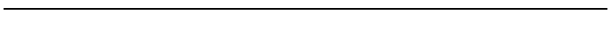

Copyright ©1995 by NeXT Computer, Inc. All Rights Reserved.
| 9 |
Building, Loading, and Debugging Loadable Kernel Servers
| The process of writing a loadable kernel server typically includes many cycles of writing, building, loading, and debugging the code. This chapter explains how to build, load, and debug your server, as well as how to build and load it once it's ready for normal use. Much of this chapter is devoted to explaining how you can use the GNU source-level debugger, GDB, to debug a server. |
| Building a Loadable Kernel Server |
| To build a server, you need two tools: the GNU C compiler (cc) and the kernel-server linker (kl_ld). The following example is an excerpt from a typical Makefile for a loadable kernel server. It shows how to build either a debugging version or a final version of the server, using cc and kl_ld. (kl_ld is discussed in detail in Appendix A, "Utilities for Loadable Kernel Servers"; cc is discussed in the NeXTSTEP Development Tools and Techniques manual.) |
 # defaults for a final version of the server:
# defaults for a final version of the server:
 OFILE_DIR= ./obj
OFILE_DIR= ./obj
 G_LOADABLE=
G_LOADABLE=
 CFLAGS= -DKERNEL -DMACH_USER_API -DMACH -Wall -O2
CFLAGS= -DKERNEL -DMACH_USER_API -DMACH -Wall -O2
 # defaults for all versions of the server:
# defaults for all versions of the server:
 NAME=mydriver
NAME=mydriver
 CFILES= mydriver.c
CFILES= mydriver.c
 OFILES= $(CFILES:.c=.o) $(MIGCFILES:.c=.o)
OFILES= $(CFILES:.c=.o) $(MIGCFILES:.c=.o)
 VPATH = $(OFILE_DIR)
VPATH = $(OFILE_DIR)
 debug:
debug:
 make $(NAME)_reloc_g \
make $(NAME)_reloc_g \
 "OFILE_DIR=./debugObj" \
"OFILE_DIR=./debugObj" \
 "G_LOADABLE=-d $(NAME)_loadable" \
"G_LOADABLE=-d $(NAME)_loadable" \
 "CFLAGS=-DKERNEL -DMACH_USER_API -DMACH -Wall -g -DDEBUG"
"CFLAGS=-DKERNEL -DMACH_USER_API -DMACH -Wall -g -DDEBUG"
 $(OFILE_DIR):
$(OFILE_DIR):
 mkdirs $@
mkdirs $@
 $(NAME)_reloc $(NAME)_reloc_g: $(OFILE_DIR) $(OFILES)\
$(NAME)_reloc $(NAME)_reloc_g: $(OFILE_DIR) $(OFILES)\
 loadCmds unloadCmds
loadCmds unloadCmds
 kl_ld -n $(NAME) -l loadCmds -u unloadCmds -i instance \
kl_ld -n $(NAME) -l loadCmds -u unloadCmds -i instance \
 $(G_LOADABLE) -o $@ $(OFILES)
$(G_LOADABLE) -o $@ $(OFILES)
 .c.o:
.c.o:
 $(CC) $(CFLAGS) -c $*.c -o $(OFILE_DIR)/$*.o
$(CC) $(CFLAGS) -c $*.c -o $(OFILE_DIR)/$*.o
| The definitions of KERNEL, MACH_USER_API, and MACH (as shown above) are necessary for every loadable kernel server. They ensure that your server has access both to kernel functionality and to most of the Mach kernel functions that are listed in Chapter 4, "Mach Functions."
The -Wall option is not necessary, but it's a good way to check your code during compilation. It instructs the compiler to warn you of many possible errors, such as passing the wrong kind of argument to a function. The -O2 option causes the compilation to be optimized to produce a smaller object file that executes more quickly. Optimization generally isn't used until the server has been completely debugged because it can make debugging more difficult (by making variables disappear or the flow of control briefly move where you don't expect it). Note: If you experience a bug that occurs only when the server is compiled with optimization, make sure that all variables that refer to hardware addresses and all variables used in more than one thread are declared as volatile. The -g option to the compiler creates symbols in the server's object file, which makes it possible to see C source code while debugging with GDB. Released drivers usually aren't compiled with -g because it makes the object file much larger. The definition of DEBUG is often used in debugging versions so that ASSERT() is defined. Finally, the -d option to kl_ld specifies that kern_loader should create a loadable object file when it allocates the server. This file is necessary when debugging the server with GDB. |
| Loading a Server into the Kernel |
| Loadable kernel servers must be allocated against the kernel before they can be loaded into it. There are three ways to allocate a server: |
| Add a line to the kernel-server loader configuration file, /etc/kern_loader.conf; the server will be allocated shortly after the system boots. The MIDI driver works this way. The kernel-server loader configuration file is discussed in Appendix A. | ||
| Write a user-level program, such as an application or background task, that calls kern_loader_add_server(). For example, the InstallTablet application allocates the tablet driver when the user presses a button. The kern_loader_add_server() function is discussed in Chapter 3, "Using Loadable Kernel Servers." | ||
| Use the command-line utility kl_util with the -a option. This command is especially useful while you're debugging your server. It can also be called from /etc/rc.local, a script called from /etc/rc during system initialization. For example, you could allocate your server depending on the result of a conditional statement in /etc/rc.local. The kl_util command is discussed in Appendix A. |
| Once a server is allocated, it can be loaded in these ways: |
| As soon as it is allocated. To specify that this should happen, put a START command in the load commands script that's passed to kl_ld. For example, all UNIX-style servers must start up as soon as they're allocated, since they're accessed by table lookups instead of Mach messages. The load commands script is described in Appendix A. | ||
| As soon as it receives a message on one of its ports. The ports that can receive the first message must be specified in the server's load commands script. Specifically, each port must be advertised using an ADVERTISE command and mapped to a handling function using an HMAP or SMAP command. | ||
| By a user-level program that calls kern_loader_load_server(). The kern_loader_load_server() function is discussed in Chapter 3. | ||
| By the -l option to kl_util. |
| When choosing how to load your driver, you should try to combine maximum user convenience with a minimum effect on system performance. For example, if you allocate and load your server just after the system boots (using /etc/kern_loader.conf and the START load command), you're increasing the amount of time that the system will take to become usable after booting. This extra time might be worthwhile if the user definitely needs the driver, but it's a high price to pay if the user doesn't need the driver. On the other hand, if you don't load your server until it's called, then the first call to the server will take a couple of seconds longer than usual.
Another possibility might be that the user explicitly load the server, such as by pressing a button in an application. However, since this is probably an inconvenience to the user, you should have a good reason for requiring it. |
| Tools for Debugging Servers |
| The GNU source-level debugger, GDB, is the primary tool for debugging loadable kernel servers. However, you'll also use many other tools while debugging your server. This section describes these other tools. The section after discusses in detail how to use GDB to debug loadable kernel servers. |
|  |
| Generating Interrupts from the Keyboard
At times, your system might freeze due to bugs in your server or mistakes while running GDB. If this happens and you don't see a Panic window, first try to generate a non-maskable interrupt (NMI), as described below. If this doesn't work, then as a last resort you can reset the CPU. To generate an NMI on a keyboard that has only one Command key, use Command-Left Alternate-~. (Hold down both the Command key and the leftmost Alternate key and press the ~ key. Do not press the Shift key.) To generate an NMI on a keyboard that has two Command keys, use Command-Command-~. (Hold down both Command keys and press the key at the upper left of the numeric keypad.) After you generate an NMI, the NMI mini-monitor window appears. Besides the msg and continue commands discussed in the section "NMI Mini-Monitor Window," you can also enter a reboot or halt command to reboot or halt the computer, or a monitor command to enter the ROM monitor. To reset the CPU, hold down the Command and Alternate keys at the lower left of the keyboard, and press the * key on the upper right of the numeric keypad. This causes the machine to reboot immediately. Rebooting will take longer than usual because the file system will be checked. Warning: Resetting the CPU can damage the file system and should be used only as a last resort! |
| NMI Mini-Monitor Window
The NMI mini-monitor window is useful for looking at the output of kernel printf() calls, for rebooting the system, and, if the system fails to reboot, for entering the ROM monitor. To bring up the NMI mini-monitor window, generate a non-maskable interrupt (NMI) as described in the gray box titled "Generating Interrupts from the Keyboard." To view the output of kernel printf() calls, use the msg command. You can limit the number of messages you see by putting =n after the command, where n is the number of messages you want to see. For example: |
 nmi> msg=3
nmi> msg=3
| To return to normal system operation, enter the continue command.
The gdb NMI mini-monitor command is sometimes necessary when using GDB to debug a server. This command is described later in this chapter, in the section "Debugging Servers with GDB." For more information on the NMI mini-monitor window, see the NeXTSTEP Network and System Administration manual.
ROM Monitor Window The ROM monitor window lets you specify command options for rebooting your system. For example, the bsd -p command boots the system and tells it not to automatically reboot if a system panic occurs. Boot commands and other generally useful ROM monitor commands are discussed in detail in the Network and System Administration manual. Some less widely used ROM monitor commands, such as those that let you examine and change the contents of hardware addresses on the CPU board, are described in Appendix B, "The ROM Monitor and NMI Mini-Monitor."
Panic Window By specifying the -p option at boot time, you tell the computer to bring up a Panic window instead of rebooting when the system panics. The Panic window is similar to the NMI mini-monitor window, but it comes up only as the result of a kernel panic. In this window you can use the gdb and msg commands, just as in the NMI mini-monitor window. If the system brings up a Panic window, you can run GDB on the panicked system if it's connected to the network. To do so, start GDB as usual on the master system (including entering the kattach command, as discussed later in this chapter). You can then use the backtrace GDB command to see what function caused the panic. After you're done using GDB, enter halt at the Panic window. Once the system has shut down, you can boot it. (If the system doesn't respond to entering halt and pressing Return, then try to shut down by using the monitor command to enter the ROM monitor.) Booting after a panic will take longer than usual, since the file system will be checked.
System Console You can view the output of printf() statements without using the NMI mini-monitor by keeping the system console window open. To open a console window, choose the Console command from the Tools menu of Workspace ManagerTM. Another way to use the console is to log in with the user name console (without a password). This will make the whole screen act like a UNIX terminal that receives all console messages. After you log in, you can enter commands at the shell prompt. Logging in as console is useful when the only thing you want to run is your server, so you don't need the overhead of a windowing environment. This is sometimes true for the slave computer when you're debugging your server with GDB.
Other Debugging Tools With BusProbe (an application in the NeXTbus Development Kit), you can read or write registers while you're testing or debugging a NeXTbus driver. BusProbe is described in Chapter 7, "NeXTbus Device Drivers." The kernel-server log command, kl_log, is useful for getting log messages from your server. If you wish, you can instead write a program that calls kern_loader_log_level() and kern_loader_get_log(). Chapter 6, "Designing Loadable Kernel Servers," describes how loadable kernel servers create log messages. The kernel-server utility, kl_util, not only lets you load and unload servers; it also can give you information about all servers or one server in particular. Entering kl_util -s gives you general information on all the servers that kern_loader knows about. To get more detailed information on a particular server, such as where in memory it's loaded, use kl_util -s servername. The vm_stat command is useful for seeing how many pages are wired down. It can help you find out whether your server is growing too large. For information on vm_stat, see its UNIX manual page. |
| Debugging Servers with GDB |
| GDB, the GNU source-level debugger, is an important debugging tool. You can use it not only during the normal debugging cycle, but also later to examine kernel panics caused by your server. With GDB, you can debug every function in your server that's called after your server is loaded. However, you can't debug functions that are called when kern_loader is initializing your server.
To use GDB to debug your server, you need two computers that are connected to a network and are running the same major release of NeXTSTEP. GDB runs on one computer (the master), debugging the server that's running on the other computer (the slave). Once you have two computers, follow these steps to debug your server (as described in detail below): |
| 1. | Set up the computers. | |
| 2. | Put the appropriate files where GDB can find them. | |
| 3. | Start up and initialize GDB. | |
| 4. | Debug with GDB. | |
| 5. | Shut down GDB. |
| This section describes the special steps you must take to use GDB on a loadable kernel server. For general information on using GDB, see NeXTSTEP Development Tools. Most GDB commands work for loadable kernel servers. However, commands for listing and affecting threads don't work.
Setting Up the Computers When setting up the master and slave computers, you must first choose which one will be the slave. Keep in mind that the slave computer will panic often and its operating system will often be frozen. Some of the consequences include: |
| The slave computer should have a minimum of disk space, so that rebooting after a panic won't take too long (due to checking the disk). | ||
| No one can depend on the slave computer working all the time. For example, you should not use the slave as an NFS®server. | ||
| If you might need any files from the slave while it's panicked or frozen, be sure to copy them to another computer. |
| Of course, the slave computer should also support whatever hardware you need to test your driver.
Once you've decided which computer is the slave, set up both computers so that they're connected to the network. You'll need access to both keyboards, so put the computers close together. Once you've set up the computers, boot them both. Use the -p option to the boot command on the slave computer so the Panic window will stay up. To verify that the two machines can communicate with each other, use the ping command at a shell prompt. If the output doesn't include the phrase "0% packet loss," contact your system administrator. Below is an example of the output of ping when the network connection is working. |
 master> /usr/etc/ping slave
master> /usr/etc/ping slave
 PING slave: 56 data bytes
PING slave: 56 data bytes
 64 bytes from 192.42.172.1: icmp_seq=0. time=13. ms
64 bytes from 192.42.172.1: icmp_seq=0. time=13. ms
 64 bytes from 192.42.172.1: icmp_seq=1. time=5. ms
64 bytes from 192.42.172.1: icmp_seq=1. time=5. ms
 <Control-C>
<Control-C>
 ----slave PING Statistics----
----slave PING Statistics----
 2 packets transmitted, 2 packets received, 0% packet loss
2 packets transmitted, 2 packets received, 0% packet loss
 round-trip (ms) min/avg/max = 5/9/13
round-trip (ms) min/avg/max = 5/9/13
 master>
master>
| Setting Up the Files
Now that you've set up the computers, you need to decide where to put the files that they need and how to keep them in up-to-date on both the master and slave computers. Usually, files are kept up-to-date by using NFS to mount the directory containing the relocatable object file onto the slave computer. Another solution is to make the slave the NetBoot client of the master. Using NFS and NetBoot is covered in the Network and System Administration manual.
Files Needed by the Slave Computer The slave computer needs only whatever files are required by kern_loader. Usually, this is just your server's relocatable object file. You must create the relocatable object file by compiling with the -g option so that it contains debugging information. Avoid using the -O option, since optimization can make variable values appear incorrect.
Files Needed by the Master Computer The master computer needs access to the following: |
| The directory that contains the source files for your server. | ||
| Your server's loadable object file. This file is produced by kern_loader on the slave computer when your server is allocated, but only if you specify the location of this file when you link your server by using the -d option of the kl_ld command. (Information on using kl_ld is at the beginning of this chapter and in Appendix A.) | ||
| A file that contains the same version of the kernel as the one that the slave is running. If the master and the slave are running the same version of the kernel, then you can use the /mach file on the master. You can check the version by searching for "mk-" in /usr/adm/messages. |
| Before you go on to the next step, write down the full name (using pathnames starting at the master computer's root directory) of the loadable object file and the server's source directory. You'll need to supply these names to GDB later.
For example, in the rest of this chapter, the loadable object file is /me/mydriver/LKS/mydriver_loadable and the server source directory is /me/mydriver/LKS.
Starting Up GDB On the master computer: |
| 1. | Become root at a shell prompt. |
 master> su
master> su
 Password:
Password:
| 2. | Change to the directory containing the kernel file that's the same version as the one running on the slave. |
 master:1# cd /
master:1# cd /
| 3. | Start GDB, specifying the name of the kernel file. |
 master:2# gdb mach
master:2# gdb mach
 Reading symbol data from mach...
Reading symbol data from mach...
 (no debugging symbols found)...done.
(no debugging symbols found)...done.
 (gdb)
(gdb)
| On the slave computer: |
| 4. | Load the server, if it isn't already running. (In the following example, a kl_util -l command isn't necessary after entering kl_util -a because the driver automatically loads when it's allocated.) |
 slave:1# kl_util -a mydriver_reloc
slave:1# kl_util -a mydriver_reloc
 Adding server with relocatable /me/mydriver/LKS/mydriver_reloc
Adding server with relocatable /me/mydriver/LKS/mydriver_reloc
 Allocating server mydriver
Allocating server mydriver
 Server mydriver linking /me/mydriver/LKS/mydriver_reloc against /mach
Server mydriver linking /me/mydriver/LKS/mydriver_reloc against /mach
 Server mydriver linking relocatable "/me/mydriver/LKS/mydriver_reloc" into loadable "/me/mydriver/LKS/mydriver_loadable"
Server mydriver linking relocatable "/me/mydriver/LKS/mydriver_reloc" into loadable "/me/mydriver/LKS/mydriver_loadable"
 Server mydriver Allocated
Server mydriver Allocated
 Server mydriver loading
Server mydriver loading
 regs.pc = 405e158
regs.pc = 405e158
 Server mydriver download complete
Server mydriver download complete
 Server mydriver starting up
Server mydriver starting up
 Server mydriver Loaded
Server mydriver Loaded
 slave:2#
slave:2#
| 5. | If the loadable object file isn't currently accessible to the master computer, copy it over to the master computer. | |
| 6. | Get into the NMI mini-monitor by generating an NMI as described earlier in this chapter. The slave computer is now frozen because its kernel is stopped. |
| On the master computer: |
| 7. | Establish the master computer's control over the slave by entering "kattach hostname", where hostname is the name of the slave machine. |
 (gdb) kattach slave
(gdb) kattach slave
 Attaching program: /mach to kernel on slave.
Attaching program: /mach to kernel on slave.
| 8. | Bring the symbol information from your loadable file into GDB. To do so, enter add-file followed by the full pathname of the loadable file. |
 0x408f30a in kdbg_connect ()
0x408f30a in kdbg_connect ()
 (gdb) add-file /me/mydriver/LKS/mydriver_loadable
(gdb) add-file /me/mydriver/LKS/mydriver_loadable
 (gdb)
(gdb)
| If you had any trouble adding your server to GDB, make sure kl_util -s servername on the slave shows your server as "Loaded." If not, load it. |
| 9. | Finally, tell GDB where your source files are with the dir or idir command. For example: |
 (gdb) dir /me/mydriver/LKS
(gdb) dir /me/mydriver/LKS
 Source directories searched: /me/mydriver/LKS://:$cdir:$cwd
Source directories searched: /me/mydriver/LKS://:$cdir:$cwd
 (gdb)
(gdb)
| Debugging with GDB
You're now ready to set breakpoints and debug your code. If you can't set breakpoints in your server, make sure it's loaded, not just allocated, on the slave computer. Remember that your server's initialization functions have already been called, so there's no point in setting a breakpoint for them. If the slave computer wasn't booted with the -p option, it's useful to set a breakpoint for panic(). Setting this breakpoint ensures that you'll be able to use the GDB backtrace command to see what caused the panic. When you're ready to continue running the kernel, use the cont (continue) command in GDB. |
| Warning: | Never use the run command when debugging a loadable kernel server. It causes unpredictable behavior. |
 (gdb) break panic
(gdb) break panic
 Breakpoint 1 at 0x40230b2
Breakpoint 1 at 0x40230b2
 (gdb) break mydriver_signoff
(gdb) break mydriver_signoff
 Breakpoint 2 at 0x105aa40c: file mydriver_main.c:17.
Breakpoint 2 at 0x105aa40c: file mydriver_main.c:17.
 (gdb) break mydriver_do_log
(gdb) break mydriver_do_log
 Breakpoint 3 at 0x105aa420: file mydriver_main.c:23.
Breakpoint 3 at 0x105aa420: file mydriver_main.c:23.
 (gdb) cont
(gdb) cont
 Continuing.
Continuing.
 Breakpoint 3, mydriver_do_log (server=0) at mydriver_main.c:23
Breakpoint 3, mydriver_do_log (server=0) at mydriver_main.c:23
 23 printf("Calling kern_serv_log.\n");
23 printf("Calling kern_serv_log.\n");
 (gdb) n
(gdb) n
 24 kern_serv_log(&instance, LOG_WARNING,
24 kern_serv_log(&instance, LOG_WARNING,
 (gdb) p instance
(gdb) p instance
 $1 = (kern_server_t) 0x10171660
$1 = (kern_server_t) 0x10171660
 (gdb) n
(gdb) n
 27 printf("Returned from calling kern_serv_log\n");
27 printf("Returned from calling kern_serv_log\n");
 (gdb) n
(gdb) n
 28 return KERN_SUCCESS;
28 return KERN_SUCCESS;
 (gdb) info breakpoints
(gdb) info breakpoints
 Enb Address Where
Enb Address Where
 #1 y 0x040230b2 <panic+4>
#1 y 0x040230b2 <panic+4>
 #2 y 0x105aa40c in mydriver_signoff at mydriver_main.c:17
#2 y 0x105aa40c in mydriver_signoff at mydriver_main.c:17
 #3 y 0x105aa420 in mydriver_do_log at mydriver_main.c:23
#3 y 0x105aa420 in mydriver_do_log at mydriver_main.c:23
 (gdb) cont
(gdb) cont
 Continuing.
Continuing.
| To get a "(gdb)" prompt on the master computer without hitting a breakpoint, type Control-C. If that doesn't work, try again by generating an NMI at the slave computer and entering gdb at the "nmi>" prompt.
Ending the Debugging Session To remove GDB from a running kernel, follow these steps: On the master computer: |
| 1. | If you don't have a "(gdb)" prompt on the master computer, get one by typing Control-C. If that doesn't work, try again by generating an NMI at the slave computer and entering gdb at the "nmi>" prompt. | |
| 2. | Delete all the breakpoints you've set, detach the debugger from the slave computer's kernel, and quit GDB. |
 (gdb) delete
(gdb) delete
 Delete all breakpoints? (y or n) y
Delete all breakpoints? (y or n) y
 (gdb) detach
(gdb) detach
 Detaching program: /mach pid -1
Detaching program: /mach pid -1
 (gdb) quit
(gdb) quit
 master:3#
master:3#